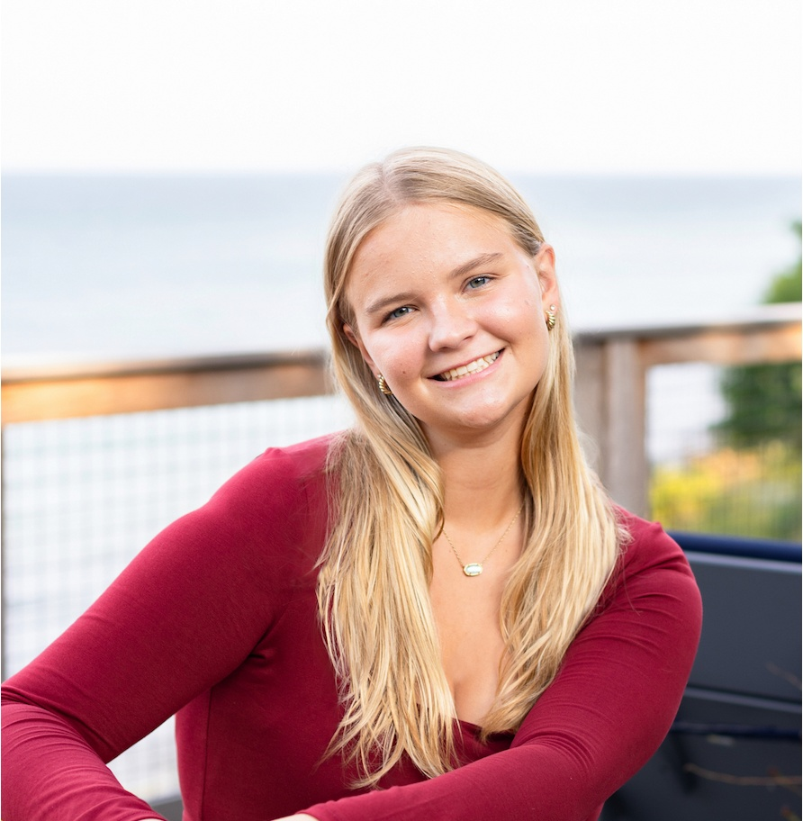

I am a Sophomore Journalism major at Syracuse University’s S.I. Newhouse School of Public Communications with hands-on experience in customer service, education, and storytelling. Whether engaging audiences, teaching groups, or supporting large-scale events, I bring adaptability, creativity, and a commitment to clear communication. I’m eager to apply my skills in writing, media, and public engagement to opportunities that blend storytelling with audience connection.
My three favorite things about Syracuse:
